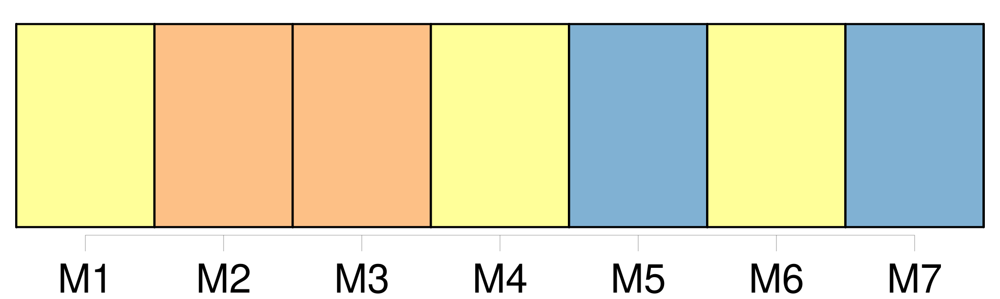

Longueur nb maillons : 10 mentions |
  |
Les condamnations par contumace n'emporteront la mort civile qu'après [les cinq années] [qui] suivront l'exécution du jugement par effigie et pendant, [lesquelles] le condamné peut se représenter. [1 phrases]
Les condamnés par contumace seront, pendant [les cinq ans] , ou jusqu'à ce qu'ils se représentent ou qu'ils soient arrêtés pendant [ce délai privés de l'exercice des droits civils] [2 phrases]
Lorsque le condamné par contumace se présentera volontairement dans [les cinq années] , à compter du jour de l'exécution, ou lorsqu'il aura été saisi et constitué prisonnier dans [ce délai] , le jugement sera anéanti de plein droit ; l'accusé sera remis en possession de ses biens il sera jugé de nouveau ; et si, par ce nouveau jugement, il est condamné à la même peine ou à une peine différente emportant également la mort civile, elle n'aura lieu qu'à compter du jour de l'exécution du second jugement. [1 phrases]
Lorsque le condamné par contumace, qui ne se sera représenté ou qui n'aura été constitué prisonnier qu'après [les cinq ans] , sera absous par le nouveau jugement, ou n'aura été condamné qu'à une peine qui n'emportera pas la mort civile, il rentrera dans la plénitude de ses droits civils, pour l'avenir, et à compter du jour où il aura reparu en justice mais le premier jugement conservera, pour le passé, les effets que la mort civile avait produits dans l'intervalle écoulé depuis l'époque de l'expiration [des cinq ans] jusqu'au jour de sa comparution en justice. [1 phrases] Si le condamné par contumace meurt dans [le délai de grâce des cinq années] sans s'être représenté, ou sans avoir été saisi ou arrêté, il sera réputé mort dans l'intégrité de ses droits. |
La ressource peut être téléchargée sur la page Ortolang
Si vous avez des questions ou vous voyez des erreurs, merci d'envoyer un mail à silvia.federzoni89@gmail.com
Site développé par S. Federzoni (contact)